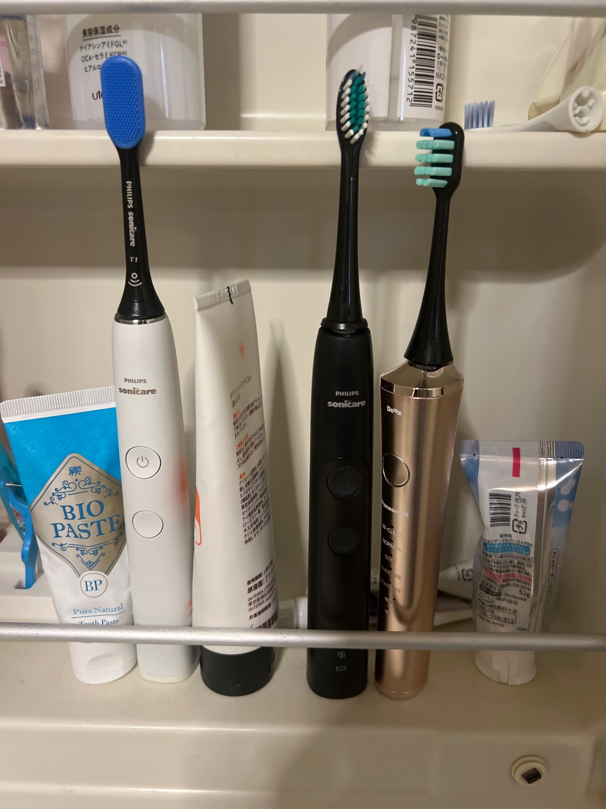
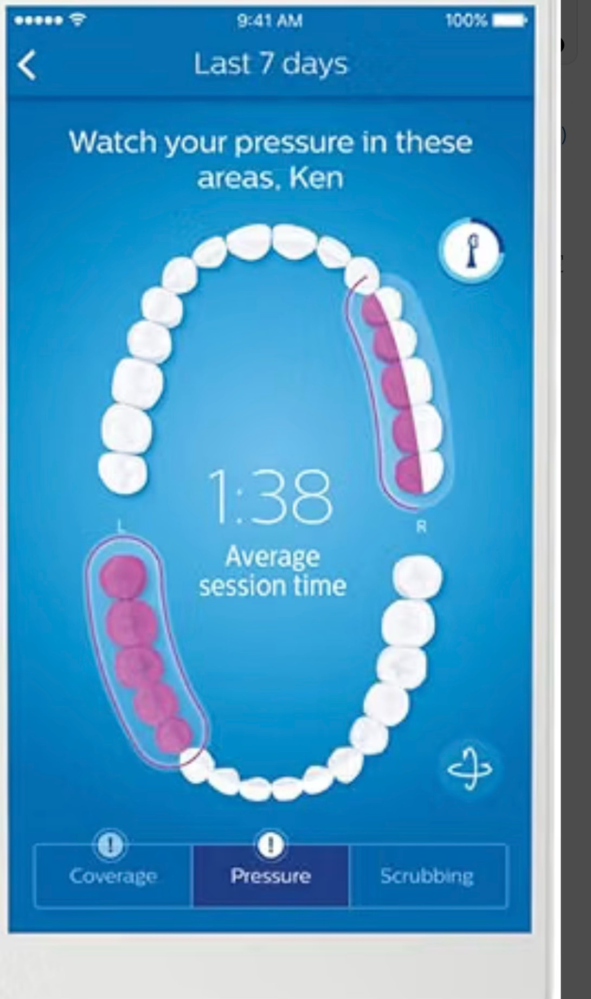

電動歯ブラシ遍歴 ― 安いブラウンで失敗して、今の3本に落ち着くまで
はじめに ― 安さで買ったブラウンで失敗した
電動歯ブラシが欲しくて、最初に買ったのはブラウンのオーラルBの電動歯ブラシでした（「やわらかグリーン」は、自分の記憶ベースの呼び方です）。理由は単純で、安かったからです。コジマで4,000円ぐらいで、3月ごろに買いました。
回転式の磨き心地自体は悪くなかったと思います。ただ、使い続けるうちに、どうしても受け入れられない欠点に気づきました。
ブラウンの衛生問題 ― 清潔にする道具が不衛生
オーラルBのブラシヘッドには穴が開いている構造で、その穴に唾液や匂いが詰まります。
握りやすい形ではあったんですが、中に汚れが詰まって、少し汚れた感じがしたのも気になりました。
歯を清潔にするための道具なのに、その道具自体があまり不衛生になってしまう。これはさすがにだめだろうと思って、使わなくなりました。結局、6月ごろまで使って、ストレスでやめました。
ちなみに、ブラウンの最上位モデルも見てみたことはあります。でも買いませんでした。唾液がたまるような構造が改善されていなかったからです。問題は値段のグレードではなく構造の方だったので、ブラウンの中で上位モデルに買い替えても、やめた理由は解消されません。お金があっても、今は買わないと思います。
安さで選ぶと、こういうところで失敗するんだなという教訓です。
余談 ― フィリップスの型番が分かりにくい
本題の前に、フィリップスの電動歯ブラシの名前の話をさせてください。正直、名前がだるいです。
同じ9000番台の型番でも全然違う製品がたくさんあって、しかも1つの製品に「型番」と「シリーズ名」が併記されます。たとえばこのあと出てくる2本は、
- 型番 HX9911/57、シリーズ名は HX991W（ダイヤモンドクリーン9000）
- 型番 HX9692/11、シリーズ名は HX962G（エキスパートクリーン7500）
という具合です。2本目に至っては、9000番台の型番なのに製品名は「7500」です。意味がわからない数字だと思います。
自分でも何度も取り違えたので、この記事では型番と製品名をセットで書くようにします。
現在の3本
その後いろいろ経て、今手元にあるのは3本です。フィリップスが2本と、ドルツが1本です。なお、フィリップスのうち1台は、軸ブレで壊れていたものを自分で分解して直して使っている個体です（詳しくは下の「分解して分かったこと」で書きます）。

フィリップス HX9911/57 ダイヤモンドクリーン9000（シリーズ名 HX991W・白）― 舌ブラシ専用
白い1本は、ダイヤモンドクリーン9000です。舌ブラシ専用にしています。歯ブラシと舌ブラシを付け替える手間がめんどくさかったので、1本を舌ブラシ用に固定してしまった、というわけです。
……とはいえ正直なところ、舌ブラシは全然使っていません。専用機まで用意したのに使わないなら、普通の歯ブラシアタッチメントで磨いた方が楽だったな、というのが今の感想です。
このモデルはゴムじゃない方のモデルで、見た目はかなりいいです（詳しくは下の「ゴムボタン vs ゴムじゃないボタン」で書きます）。
残念なところは充電の形式です。底が凹んでいないので、充電するときは専用の容器（グラス）に入れてやらないといけません。その分、置き場所を取ってしまって、ちょっと不便寄りになっています。そこだけが残念です。
使用頻度は低いものの、フィリップスのメインをこのWの方にするかは検討中です。
フィリップス HX9692/11 エキスパートクリーン7500（シリーズ名 HX962G・黒）― 今のメイン
今メインで使っているのは、黒いエキスパートクリーン7500です。繰り返しになりますが、9000番台の型番（HX9692/11）なのに製品名は「7500」です。
このモデルは、電源／モードボタンがゴム製です。ボタンは押しやすいものの、ゴムはいつか加水分解で劣化します。そこが不満で、いつか売るかもしれません（詳しくは下の「ゴムボタン vs ゴムじゃないボタン」で書きます）。
充電の形式は良かったと思います。本体の底の穴が凹んでいて、充電器に置きやすく、充電しやすい作りでした。舌ブラシ専用のHX9911/57にはその凹みがなく、専用の容器に入れないと充電できないので、その点ではHX9692/11の方が便利です。
パナソニック ドルツ DP51（金）
もう1本は、パナソニックのドルツ DP51です。
ドルツは歯科方面でも評判がいいと聞いて、試してみたくなりました。検索しても一番上に出てくるし、「この歯ブラシを買っとけ」みたいな評判のされ方をしていて、フィリップスと両方使いたかったのもあって買いました。ドルツにはいろいろなモデルがあるらしいのですが、買うならせっかくだからと、一番高いDPシリーズのDP51を選びました。
じゃあドルツとフィリップスをどう使い分けているかというと、正直、気分で使い分けています。朝はこっち、夜はこっち、みたいな決め方はしていません。
ついでに書くと、ドルツのジェットウォッシャー EW-DJ55 も買いました。ただ、正直あまり使っていません。
分解して分かったこと ― 軸ブレと、中の錆び
これは修理や再販で電動歯ブラシを分解してきた立場からの話です。
フィリップスには、軸ブレ（軸にガタが出る症状）が出ることがあります。自分の使っていた個体でも1回起きて、分解して直しました。前に書いた「自分で直して使っているフィリップス」は、この軸ブレの個体です。
フリマを見ていても、軸ブレしたフィリップスがジャンクとして大量に出ています。珍しい故障ではなく、わりと定番の症状なんだと思います。
そして、分解した個体は、どれも中が錆びていました。防水等級は付いているはずなのに、お風呂場などで使っているうちに内部のゴム（シール）が劣化して、水が少しずつ入ってしまうようです。「防水だから水回りで使っても平気」とは言い切れない、というのが分解してきた実感です。
ゴムボタン vs ゴムじゃないボタン
フィリップスを使っていて気づいた、ボタンの素材の話です。今の2本がちょうど対照的でした。
- ゴムのボタンのモデル（HX9692/11 エキスパートクリーン7500）: ボタンが押しやすい。それだけが利点です。ただ、電源／モードボタンの部分にゴムが使われていると、いつか加水分解で劣化します。そこが不満で、このHX9692/11はいつか売ると思います。フィリップスのメインをW（HX9911/57）の方に切り替えることも考えています。
- ゴムじゃないモデル（HX9911/57 ダイヤモンドクリーン9000）: 見た目がかなりいいです。とはいえプラスチック製になったせいか、ボタンは押しづらくなっています。
押しやすさと、見た目と耐久性。全部を満たすボタンはなかなかない、という話です。
手放したフィリップス ― 本体でモード切り替えができない
過去には、フィリップスのHX9992（ダイヤモンドクリーン プレステージ9900）を手放したこともあります。
理由は、歯ブラシ本体でモードの切り替えができない仕様だったこと。本体で操作できないのは、自分には致命的でした。なんでこんな仕様にしたんだろう、と思いながら売りました。
とはいえ、良いところもありました。本体の高さが他のモデルより少し小型化されています。小さいほど正義、という人には、むしろHX9992の方が合うと思います。
あと、底に凹みがない分、電源・モードボタンは押しやすかったです。ランプ（LED）機能など、他のモデルとの差別化ができている部分もありました。
正直に言うと、本体でモード切り替えさえできていれば、これをメインで使っていたと思います。その一点だけが本当に残念でした。
おまけ ― アプリの磨き具合表示は、HX999系だけ細かい
ガチで誰が使うかわからないレベルの情報ですが、フィリップスの公式アプリの話です。
アプリで歯を磨くと、どこを磨いたか・圧力をかけすぎていないかが見える化されます。ただ、2026年10月時点で確認した限りでは、HX999系以外のモデルでは、歯のモデルや動作の表示が簡易化されていました。細かい表示が出るのはHX999系だけ、という作りだったはずです。
なお、これは2026年10月時点の話です。その後のアップデートで今の環境は変わっているかもしれません。

「進化モデル」と言われても、中身は同じ
これはフィリップスとドルツ、双方に言えることですが、それぞれの「進化モデル」と言われている物は、中身はだいたい同じです。
実際フィリップスも、機能と耐久面以外は同じだし。モデル選びで悩むなら、ボタンみたいな「毎日触るところの違い」で選んだ方がいい、というのが使ってみた結論です。
電動歯ブラシ全般のデメリット ― 純正の替えブラシが高い
機種を問わず言えるデメリットとして、純正の替えブラシが高い、というのがあります。本体を買って終わりではなく、替えブラシ代がずっとかかるので、そこは買う前に見ておいた方がいいと思います。
結論 ― 買う価値あり
ちゃんとした電動歯ブラシを買ってから、毎日の歯ブラシが苦ではなくなりました。
安いブラウンでの失敗はあったけど、回り道込みで、電動歯ブラシは買う価値ありだと思います。